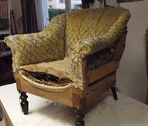
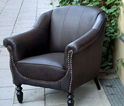

Gute Luftfeuchtigkeit lässt Ihr Möbelstück am Leben
Die meisten Schäden an antiken Möbeln entstehen durch zu trockene Heizungsluft. Am besten ist eine Temperatur um 20°C, plus/minus 2°C und eine relative Luftfeuchtigkeit von 45% bis 65%. Man sollte das mit einem Hygrometer regelmäßig kontrollieren und gegebenenfalls einen Luftbefeuchter einsetzen. Gravierende Schwankungen der Temperatur, wie auch der Luftfeuchtigkeit sind zu vermeiden.
Bei Fußbodenheizung, vermeiden Sie unbedingt, das gute Stück auf eine Heizschlange zu stellen. Wenn das nicht zu vermeiden ist, stellen Sie diese ab.
Vorher & Nachher
Sehen Sie von uns restaurierte Möbelstücke im Vorher-Nachher-Vergleich.


1920ER JAHRE
Sessel aus Frankreich
Handwerklich bearbeitet und mit Wasserbüffelleder überzogen. Bewegen Sie den Schieberegler, um den Vorher- und Nachherzustand zu vergleichen.